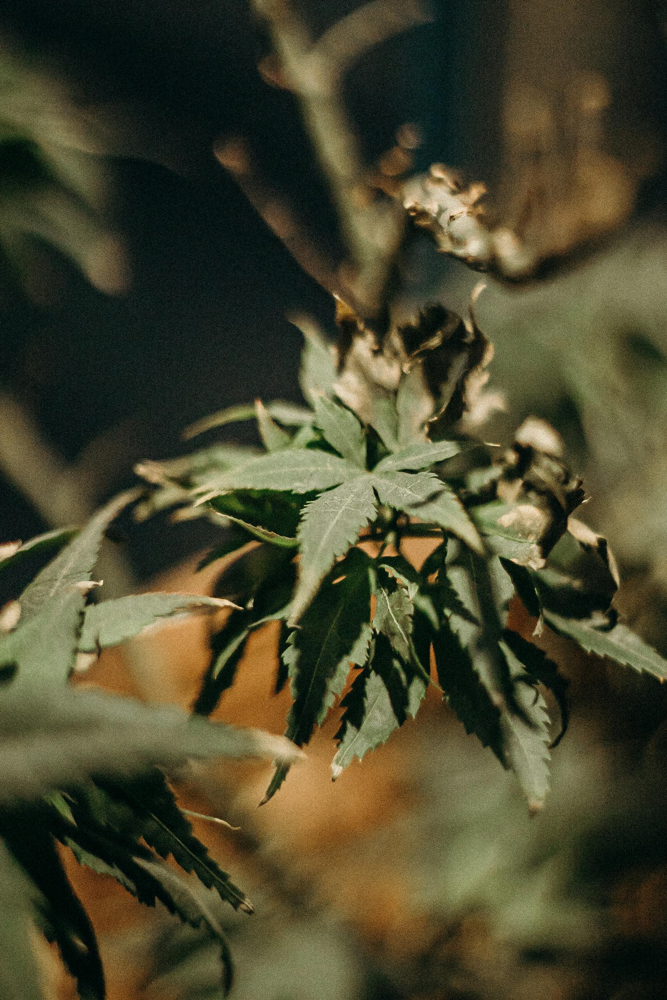

Outdoor TOPMAX
Try-Pack outdoor possuí uma combinação que permite ao cultivador obter experiência com a gama dos fertilizantes orgânicos da Biobizz proporcionando a nutrição básica de uma a quatro plantas de uma forma completa.
Para o período vegetativo o FISH MIX é completo, possuí composição de primeira qualidade a base de açúcar de beterraba holandesa 100% orgânica(melaço), ativa a flora bacteriana do substrato, proporcionando um crescimento vigoroso e rápidodando nutrição e imunidade a planta desde o enraizamento até a mudança de ciclo onde damos início ao uso do BIOBLOOM que pode ser usado desde o princípio da etapa de floração até sua maturidade.

